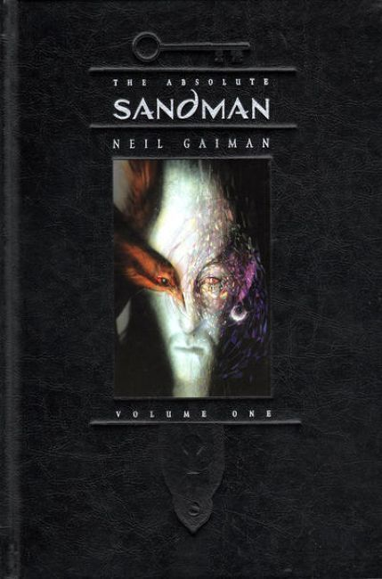
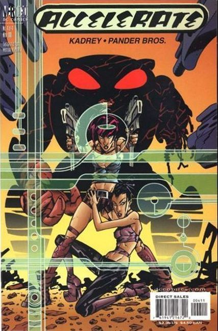
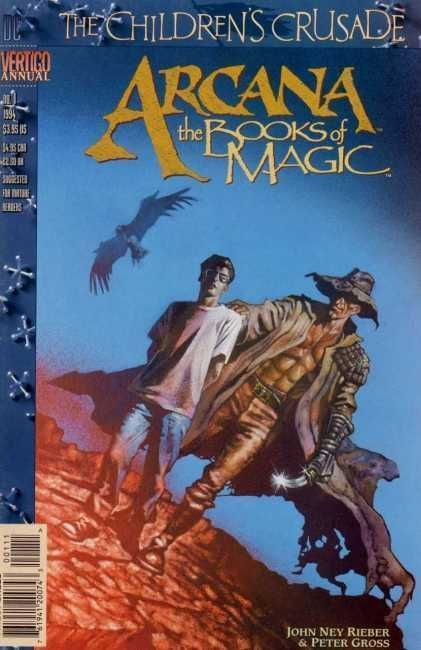
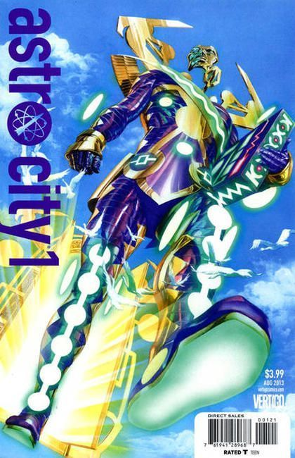
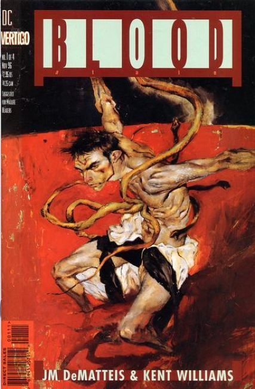
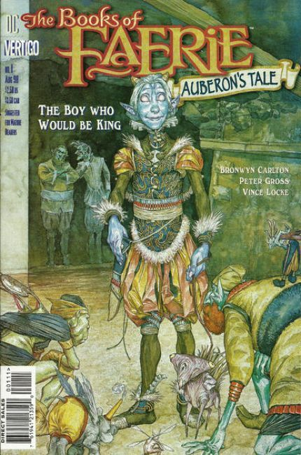
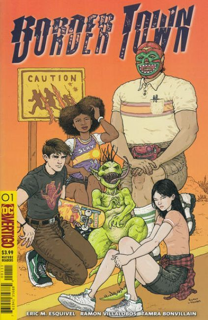
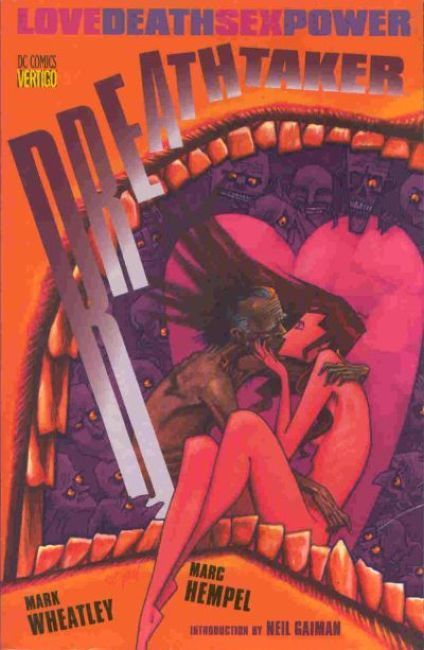
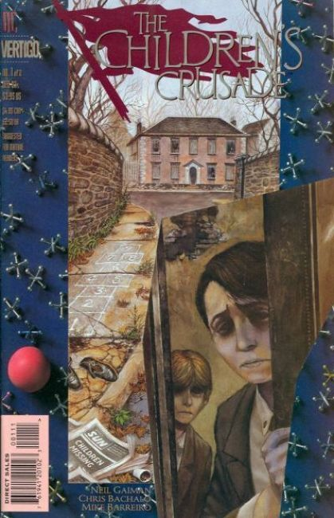

Vertigo Comics
×









❮
❯
DC Vertigo (also known as Vertigo Comics) is an imprint of the American comic book publisher DC Comics. It was created in 1993 to publish stories with more graphic or adult content that could not fit within the restrictions of the Comics Code Authority, thus allowing more creative freedom than DC's main imprint.
These comics were free to contain explicit violence, substance and drug abuse, sexuality, nudity, profanity, and other controversial subjects, similar to the content of R-rated films. Following a series of editorial restructurings in the 2010s, DC announced in June 2019 that the imprint would be discontinued in January 2020.
Although its initial publications were primarily in the horror and fantasy genres, it also published works dealing with crime, social commentary, speculative fiction, biography, and other genres. Originally publishing a mix of company- and creator-owned work, its focus in later years was on the latter. It pioneered in North America an increasingly common publishing model, in which monthly series are periodically comprised into collected editions which are kept in print for bookstore sale.
Vertigo series won the comics industry's Eisner Award, including the "best continuing series" of various years (The Sandman, Preacher, 100 Bullets, Y: The Last Man and Fables). Several of its publications were adapted to film (such as Constantine, A History of Violence, Stardust, and V for Vendetta) and episodic television (such as Constantine, iZombie, Lucifer, and Preacher).
Titles
99 Days (2011)
100% (2002)
100 Bullets (1999)
100 Bullets: Brother Lono (2013)
2020 Visions (1997)
A.D.D. Adolescent Demo Division (2012)
Aaron and Ahmed (2011)
Absolute Death (1995)
Absolute Peacher (2016)
Absolute Sandman (2006)
Absolute Vertigo (1995)
Accelerate (2000)
Adventures in the Rifle Brigade (2000)
Adventures in the Rifle Brigade: Operation: Bollock (2001)
Air (2008)
Alcoholic (2008)
American Carnage (2018)
American Century (2001)
American Freak: A Tale of the Un-Men (1994)
American Splendor (2006)
American Vampire (2010)
American Vampire Anthology (2013)
American Vampire: The Long Road To Hell (2013)
American Vampire: Lord of Nightmares (2012)
American Vampire: Second Cycle (2014)
American Vampire: Survival of the Fittest (2011)
American Virgin (2006)
American Way: Those Above and Those Below (2017)
Angel and the Ape (2001)
Angeltown (2005)
Animal Man (1993)
Area 10 (2010)
Arcana: The Books of Magic Annual (1994)
Army@Love (2007)
Army@Love: The Art of War (2008)
Art Ops (2015)
Astro City (2013)
Bang Tango (2009)
Barnum!: In Secret Service to the USA (2003)
Battleaxes (2000)
Beware the Creeper (2003)
Bigg Time: A Farcical Fable of Fleeting Time (2002)
Bite Club (2004)
Bite Club: Vampire Crime Unit (2006)
Black Orchid (1993)
Blood & Water (2003)
Blood and Shadows (1996)
Blood: A Tale (1996)
Bodies (2014)
Books of Faerie (1997)
Books of Faerie: Auberon's Tale (1998)
Books of Faerie: Molly's Story (1999)
Books of Magic (1994)
Books of Magick: Life During Wartime (2004)
Border Town (2018)
Brave Old World (2000)
Breathtaker (1990)
Bronx Kill (2010)
Cairo (2007)
Can't Get No (2006)
Chiaroscuro: The Private Lives of Leonardo da Vinci (1995)
Children's Crusade (1993)
Chill (2010)
Cinderella: Fables are Forever (2011)
Cinderella: From Fabletown with Love (2010)
Clean Room (2017)
Codename: Knockout (2001)
Coffin Hill (2013)
Collider (2013)
Compleat Moonshadow (1998)
Congo Bill (1999)
Constantine: The Official Movie Adaptation (2005)
Cowboy Wally Show (2003)
Cowboys (2011)
Crossing Midnight (2007)
Cruel and Unusual (1999)
Crusades (2001)
Cuba: My Revolution (2010)
Dark Entries (2009)
Dark Night: A True Batman Story (2016)
Dark And Bloody (2016)
Dark Rain: A New Orleans Story (2010)
Daytripper (2010)
Dead Boy Detectives (2001)
Deadenders (2000)
Deadman (2006)
Death Talks About Life (1994)
Death: At Death's Door (2003)
Death: The High Cost of Living (1993)
Death: The Time of Your Life (1996)
Deathbed (2018)
Delirium's Party: A Little Endless Storybook (2011)
Demo (2004)
Destiny: A Chronicle of Deaths Foretold (1998)
Dhampire: Stillborn (1996)
Django Zorro (2014)
Django Unchained (2013)
DMZ (2006)
Dog Moon (1996)
Dominique Laveau: Voodoo Child (2012)
Doom Patrol (1993)
Dreaming (1996)
Dreaming (2018)
Eaters (1995)
Effigy (2015)
Egypt (1995)
El Diablo (2001)
Endless Gallery (1995)
Enigma (1993)
Essential Vertigo: Swamp Thing (1996)
Essential Vertigo: The Sandman (1996)
Everafter: From the Pages of Fables (2016)
Executor (2010)
Exterminators (2006)
Extremist (1993)
Fables (2002)
Fables: 1001 Nights of Snowfall (2006)
Fables: The Last Castle (2003)
Fables: The Wolf Among Us (2015)
Face (1995)
Fairest (2012)
Fairest In All the Land (2013)
Faith (1999)
Faker (2007)
Farewell Moonshadow (1997)
Faultlines (1997)
FBP: Federal Bureau of Physics (2013)
Fight for Tomorrow (2002)
Filth (2002 – Oct. 2003
Filthy Rich (2009)
Finals (1999)
Flex Mentallo (1996)
Flinch (1999)
Fogtown (2010)
Fountain (2005)
Four Horsemen (2000)
Frostbite (2016)
Gangland (1998)
Get Jiro! (2012)
Get Jiro: Blood and Sushi (2015)
Ghostdancing (1995)
Ghosts (2012)
Gifts of the Night (1999)
Girl (1996)
Girl Who Kicked The Hornets' Nest (2015)
Girl Who Played With Fire (2014)
Girl Who Would Be Death (1998)
Girl With The Dragon Tattoo (2012)
God Save the Queen (2007)
Goddess (1995)
Goddess Mode (2018)
Gone to Amerikay (2012)
Greatest Hits (2008)
Greek Street (2009)
Green Woman (2010)
Grip: The Strange World of Men (2002)
Happydale: Devils in the Desert (1999)
Haunted Tank (2009)
Heart of the Beast (1994)
Heartland (1997)
Heartthrobs (1999)
Heavy Liquid (1999)
Hell Eternal (1998)
Hellblazer (1993)
Hellblazer: All His Engines (2005)
Hellblazer: City of Demons (2010)
Hellblazer: Hard Time (2001)
Hellblazer: Pandemonium (2010)
Hex Wives (2018)
High Level (2019)
Hinterkind (2013)
Horrorist (1995)
House of Mystery (2008)
House of Secrets (1996)
House of Whispers (2018)
House On The Borderland (2000)
How to Understand Israel in 60 Days of Less (2010)
Human Target (1999)
Human Target: Final Cut (2002)
Hunter: The Age of Magic (2001)
I Die At Midnight (2000)
I, Paparazzi (2001)
Imaginary Fiends (2018)
In the Shadow of Edgar Allan Poe (2003)
Incognegro (2008)
Industrial Gothic (1995)
Invisibles (1994)
It's a Bird... (2004)
iZombie (2010)
Jack of Fables (2006)
Joe the Barbarian (2010)
John Constantine, Hellblazer: Original Sins (2011)
Jonah Hex: Riders of the Worm and Such (1995)
Jonah Hex: Shadows West (1999)
Jonah Hex: Two-Gun Mojo (1993)
Jonny Double (1998)
Junk Culture (1997)
Kid Eternity (1993)
Kill Your Boyfriend (1995)
King David (2002)
Last Gang in Town (2016)
Last One #1–6 Jul. 1993 – Dec. 1993
Literals #1–3 Jun. 2009 – Aug. 2009
Little Endless Storybook Aug. 2001
Losers #1–32 Aug. 2003 – Mar. 2006
Lost Boys #1–6 Oct. 2016 – May 2017
Lovecraft Graphic novel 2004
Loveless #1–24 Dec. 2005 – Jun. 2008
Lucifer #1–75 Jun. 2000 – Aug. 2006
Lucifer: Nirvana 2002
Luna Park Graphic novel 2009
Mad Max: Fury Road – Furiosa #1 Aug. 2015
Mad Max: Fury Road – Mad Max #1–2 Sep. 2015 – Oct. 2015
Mad Max: Fury Road – Nux & Immortan Joe #1 Jul. 2015
Madame Xanadu #1–29 Aug. 2008 – Jan. 2011
Marzi: A Memoir Graphic novel Oct. 2011
Menz Insana Graphic novel 1997
Mercy Graphic novel 1993
Midnight, Mass. #1–8 Jun. 2002 – Jan. 2003
Midnight, Mass: Here There Be Monsters #1–6 Mar. 2004 – Aug. 2004
Millenium Edition Hellblazer Jul. 2000
Millennium Fever #1–4 Oct. 1995 – Jan. 1996
Minx #1–8 Oct. 1998 – May 1999
Mnemovore #1–6 Jun. 2005 – Nov. 2005
Mobfire #1–6 Dec. 1994 – May 1995
Moonshadow #1–12 Sep. 1994 – Aug. 1995
Motherlands #1–6 Mar. 2018 – Aug. 2018
Muktuk Wolfsbreath: Hard-Boiled Shaman #1–3 Aug. 1998 – Oct. 1998
My Faith in Frankie #1–4 Mar. 2004 – Jun. 2004
Mystery in Space Jul. 2012
Mystery Play Graphic novel Jan. 1994
Mythos: The Final Tour #1–3 Dec. 1996 – Feb. 1997
Names of Magic #1–5 Feb. 2001 – Jun. 2001
Neil Gaiman and Charles Vess' Stardust #1–4 Dec. 1997 – Mar. 1998
Neil Gaiman's Midnight Days Graphic novel 1999
Neil Gaiman's Neverwhere #1–9 Aug. 2005 – Sep. 2006
Nevada #1–6 May 1998 – Oct. 1998
New Deadwardians #1–8 May 2012 – Dec. 2012
New Romancer #1–6 Feb. 2016 – Jul. 2016
New York Five #1–4 Mar. 2011 – Jun. 2011
Nobody Graphic novel Jul. 2009
Noche Roja Graphic novel 2011
Northlanders #1–50 Feb. 2008 – Jun. 2012
Orbiter Graphic novel 2003
Originals Graphic novel Nov. 2004
Other Lives Graphic novel 2010
Other Side #1–5 Dec. 2006 – Apr. 2007
Otherworld #1–7 May 2005 – Nov. 2005
Outlaw Nation #1–19 Nov. 2000 – May 2002
Peter & Max: A Fables Novel Graphic novel
Preacher #1–66 Apr. 1995 – Oct. 2000
Preacher Special: Cassidy – Blood & Whiskey Feb. 1998
Preacher Special: One Man's War Mar. 1998
Preacher Special: Saint of Killers #1–4 Aug. 1996 – Nov. 1996
Preacher Special: Tall in the Saddle Feb. 2000
Preacher Special: The Good Old Boys Aug. 1997
Preacher Special: The Story of You-Know-Who Dec. 1996
Pride & Joy #1–4 Jul. 1997 – Oct. 1997
Pride of Baghdad Graphic novel Sep. 2006
Prince of Cats Graphic novel Sep. 2012
Proposition Player #1–6 Dec. 1999 – May 2000
Pulp Fantastic #1–3 Feb. 2000 – Apr. 2000
Punk Rock Jesus #1–6 Sep. 2012 − Feb. 2013
Quitter Graphic novel 2005
Rat Catcher Graphic novel 2010
Red Thorn #1–13 Jan. 2016 – Feb. 2017
Return to Perdition Graphic novel Nov. 2011
Revolver Graphic novel Jul. 2010
Right State Graphic novel Aug. 2012
S.C.I. Spy #1–6 Apr. 2002 – Sep. 2002
Sandman #47–75 Mar. 1993 – Mar. 1996
Sandman: A Gallery of Dreams #1 1994
Sandman: Endless Nights Graphic novel 2003
Sandman Midnight Theatre Graphic novel Sep. 1995
Sandman Mystery Theatre #1–70 Apr. 1993 – Feb. 1999
Sandman Mystery Theatre: Sleep of Reason #1–5 Feb. 2007 – Jun. 2007
Sandman: Overture #1–6 Dec. 2013 − Nov. 2015
Sandman Presents: Bast #1–3 Mar. 2003 – May 2003
Sandman Presents: The Corinthian #1–3 Dec. 2001 – Feb. 2002
Sandman Presents: The Dead Boy Detectives #1–4 Aug. 2001 – Nov. 2001
Sandman Presents: Everything You Always Wanted to Know About Dreams... But Were Afraid to Ask Jul. 2001
Sandman Presents: Love Street #1–3 Jul. 1999 – Sep. 1999
Sandman Presents: Lucifer: The Morningstar Option #1–3 Mar. 1999 – May 1999
Sandman Presents: Merv Pumpkinhead, Agent of Dream #1 2000
Sandman Presents: Petrefax #1–4 Mar. 2000 – Jun. 2000
Sandman Presents: The Furies Graphic novel 2002
Sandman Presents: The Thessaliad #1–4 Mar. 2002 – Jun. 2002
Sandman Presents: Thessaly – Witch for Hire #1–4 Apr. 2004 – Jul. 2004
Sandman: The Dream Hunters Graphic novel 1999
Sandman: The Dream Hunters #1–4 Jan. 2009 – Apr. 2009
Saucer Country #1–14 May 2012 – Jun. 2013
Scalped #1–60 Mar. 2007 – Oct. 2012
Scarab #1–8 Nov. 1993 – Jun. 1994
Scene of the Crime #1–4 May 1999 – Aug. 1999
Seaguy #1–3 Jul. 2004 – Sep. 2004
Seaguy: Slaves of Mickey Eye #1–3 Jun. 2009 − Aug. 2009
Sebastian O #1–3 May 1993 – Jul. 1993
Seekers into the Mystery #1–15 Jan. 1996 – Apr. 1997
Sentences: The Life of MF Grimm Graphic novel Sep. 2007
Seven Miles a Second Graphic novel May 1996
Sgt. Rock: Between Hell & a Hard Place Graphic novel 2003
Shade, the Changing Man #33–70 Mar. 1993 – Apr. 1996
Shadows Fall #1–6 Nov. 1994 – Apr. 1995
Sheriff of Babylon #1–12 Feb. 2016 − Jan. 2017
Shooters Graphic novel Apr. 2012
Silverfish Graphic novel 2008
Skin Graft: The Adventures of a Tattooed Man #1–4 Jul. 1993 – Oct. 1993
Sleepy Hollow Graphic novel Jan. 2000
Sloth Graphic novel Jul. 2006
Spaceman #1–9 Dec. 2011 – Oct. 2012
Strange Adventures #1–4 Nov. 1999 – Feb. 2000 #1 Jul. 2011
Suiciders #1–6 Apr. 2015 – Nov. 2015
Suiciders Kings of HelL.A. #1–6 May 2016 – Dec. 2016
Swamp Thing #129–171 Mar. 1993 – Oct. 2006
Swamp Thing: Roots Graphic novel 1998
Sweet Tooth #1–40 Nov. 2009 – Feb. 2013
System #1–3 May 1996 – Jul. 1996
Tainted Feb. 1995
Tank Girl: Apocalypse #1–4 Nov. 1995 – Feb. 1996
Tank Girl: The Movie Adaption #1 1995
Tank Girl: The Odyssey #1–4 Jun. 1995 – Oct. 1995
Tattered Banners #1–4 Nov. 1998 – Feb. 1999
Tell Me, Dark Graphic novel 1998
Terminal City #1–9 Jul. 1996 – Mar. 1997
Terminal City: Aerial Graffiti #1–5 Nov. 1997 – Mar. 1998
Testament #1–22 Feb. 2006 – Mar. 2008
Time Warp May 2013
Tokyo Days, Bangkok Nights Graphic novel Jan. 2009
Tom Strong and the Planet of Peril #1–6 Sep. 2013 − Feb. 2014
Totems Feb. 2000
Toxic Gumbo Graphic novel May 1998
Tragical Comedy or Comical Tragedy of Mr. Punch Graphic novel 1994
Transmetropolitan #13–60 Sep. 1998 – Nov. 2002
Trenchcoat Brigade #1–4 Mar. 1999 – Jun. 1999
Trigger #1–8 Feb. 2005 – Sep. 2005
Trillium #1–8 Oct. 2013 − Jun. 2014
True Faith Graphic novel 1997
Un-Men #1–13 Oct. 2007 – Oct. 2008
Uncle Sam #1–2 1997
Undercover Genie Graphic novel 2003
The Unexpected Dec. 2011
Unknown Soldier #1–4 Apr. 1997 – Jul. 1997 #1–25 Dec. 2008 – Dec. 2010
Unseen Hand #1–4 Sep. 1996 – Dec. 1996
Unwritten #1–54 Jul. 2009 – Dec. 2013
Unwritten: Apocalypse #1–12 Mar. 2014 – Mar. 2015
Unwritten: Tommy Taylor and the Ship That Sank Twice Graphic novel Sep. 2013
User #1–3 Mar. 2001 – May 2001
Vamps #1–6 Aug. 1994 – Jan. 1995
Vamps: Hollywood and Vein #1–6 Feb. 1996 – Jul. 1996
Vamps: Pumpkin Time #1–3 Dec. 1998 – Feb. 1999
Veils Graphic novel Dec. 1999
Vertical Graphic novel Oct. 2003
Vertigo Jam Aug. 1993
Vertigo Pop! #1–4 Sep. 2002 – Dec. 2003
Vertigo Preview Jan. 1993
Vertigo Rave Fall 1994
Vertigo Resurrected Dec. 2010
Vertigo Secret Files & Origins: Swamp Thing Nov. 2000
Vertigo Secret Files: Hellblazer Aug. 2000
Vertigo Visions Jun. 1993
Vertigo: Winter's Edge #1–3 1998 – 2000
Vertigo X Anniversary Preview Apr. 2003
Vimanarama #1–3 Apr. 2005 – Jun. 2005
Vinyl Underground #1–12 Dec. 2007 – Nov. 2008
Wake #1–10 Jul. 2013 − Sep. 2014
War Story Dec. 2001
We3 #1–3 Oct. 2004 – Mar. 2005
Weird War Tales #1–4 Jun. 1997 – Sep. 1997
Weird Western Tales #1–4 Apr. 2001 – Jul. 2001
Welcome Back to the House of Mystery Jul. 1998
Why I Hate Saturn Graphic novel 1990
Witchcraft #1–3 Jun. 1994 – Aug. 1994
Witchcraft: La Terreur #1–3 Apr. 1998 – Jun. 1998
Witching #1–10 Aug. 2004 – May 2005
Witching Hour #1–3 Jan. 2000 – Mar. 2000
Y: The Last Man #1–60 Sep. 2002 – Mar. 2008
Yossel Graphic novel May 2011
You Are Here Graphic novel Nov. 1998
Young Liars #1–18 May 2008 – Oct. 2009
Zatanna: Everyday Magic Graphic novel 2003


{kind=link}
{kind=link}
{kind=link}
{kind=link}
{kind=link}
{kind=link}
{kind=link}
{kind=link}
{kind=link}
{kind=link}
{kind=link}
{kind=link}
{kind=link}
{kind=link}
{kind=link}
{kind=link}
{kind=link}
{kind=link}
{kind=link}
{kind=link}
{kind=link}
{kind=link}
{kind=link}
{kind=link}
{kind=link}
{kind=link}
{kind=link}
{kind=link}
{kind=link}
{kind=link}
{kind=link}
{kind=link}
{kind=link}
{kind=link}
{kind=link}
{kind=link}
{kind=link}
{kind=link}
{kind=link}
{kind=link}
{kind=link}
{kind=link}
{kind=link}
{kind=link}
{kind=link}
{kind=link}
{kind=link}
{kind=link}
{kind=link}
{kind=link}
{kind=link}
{kind=link}
{kind=link}
{kind=link}
{kind=link}
{kind=link}
{kind=link}
{kind=link}
{kind=link}
{kind=link}
{kind=link}
{kind=link}
{kind=link}
{kind=link}
{kind=link}
{kind=link}
{kind=link}
{kind=link}
{kind=link}
{kind=link}
{kind=link}
{kind=link}
{kind=link}
{kind=link}
{kind=link}
{kind=link}
{kind=link}
{kind=link}
{kind=link}
{kind=link}
{kind=link}
{kind=link}
{kind=link}
{kind=link}
{kind=link}
{kind=link}
{kind=link}
{kind=link}
{kind=link}
{kind=link}
{kind=link}
{kind=link}
{kind=link}
{kind=link}